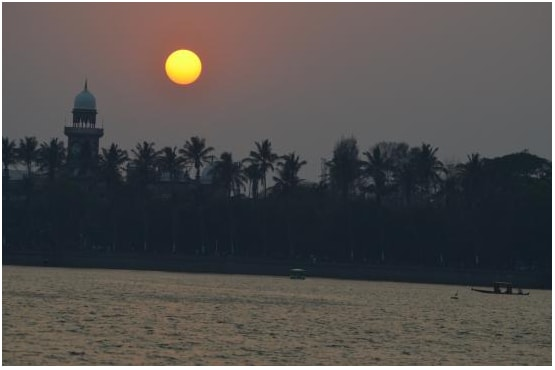

About rankala lake:
A Rankala Lake is in the heart of Kolhapur city of Maharashtra and it is a manmade lake construction during the supremacy of Maharaja Shri Shahu Chhatrapati. It is a must visit place whenever you are in Kolhapur city. I enjoy this place because of its scenic beauty and a small walk next to this lake adds a charm to its beauty besides lots of mouth-watering snack stalls like Kolhapuri bhel, Pani Puri, spicy dosa and many more yummy dishes.Sometimes I even take a boat ride and have a glimpse of the sunset. Yes, you heard it right; Rankala lake is very famous for boat rides for couples and families. There is also a park just adjacent to Rankala lake, and it is a wonderful place to spend evening time by watching the lake and eating bhel puri. This park is popular for Families and kids. Couples take a boat ride deep in the lake watching a sunset and spend a beautiful time.
History : Before the eighth century, Rankala was a stone quarry. In the 9th century, an earthquake caused immense structural damage to the quarry, causing water to accumulate from an underground source forming the Rankala Lake. This historic lake features a Hindu temple with a Nandi.[1] According to local Hindu beliefs, Lord Shiva uses the Nandi, moves a single wheat grain towards the lake, and backs about a distance of single rice grain daily. Hindu beliefs state that if Lord Shiva reaches Rankala, the apocalypse will begin.

The Shalini Palace stands on the west bank of this lake. It is built of structured with black stone and Italian marble and now it is converted into a hotel. But recently I heard the hotel is closed for renovations. But you can see the beautiful palace while sitting in the park.
Best time to visit Rankala Lake Every season is best to visit and spend time at the beautiful Rankala Lake because I visited in all seasons and trust me every season has its own charm to look towards the lake. Even in Monsoon, many people visit, especially when the lake overfills and water comes out as shown in one picture. Even people visit in evenings to taste beautiful snacks during the monsoon. In summer you can see many people taking boat rides, sitting in the park adjacent to the lake and enjoying delicious snacks. Entry is free to the lake and park but you need to pay for a boat ride.

How to reach rankala lake:
Address : M6Q6+PMF, Kolhapur-Gaganbavda Road, Kolhapur-Radhanagari Rd, C Ward, Kolhapur, Maharashtra 416012Tab to go Google Map Location Back to Gallary